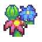

Garden Conditions Now
Temperature
--°F
Dew Point
--°F
Humidity
--%
Rain Today
--in
7-day rainfall
--
30-day rainfall
--
Wind
--
UV / solar
--
Frost & Freeze Watch
Checking the local forecast…
Next 7 days
--
32°F freeze
--
28°F hard freeze
--
Frost risk here uses the National Weather Service hourly forecast for the station area. A forecast signal is not the same thing as an observed frost event.
Growing Season
Local last ≤32°F
--
Local first ≤32°F
--
Local record
--
NWS PBZ
growing season
The local station archive is still young, so the page will not pretend it has a decades-long frost history. As the archive grows, these values can become truly Clover-Terrace-specific.
Heat Accumulation · Growing Degree Days
--
GDD base 50°F · local archive-to-date
--
GDD base 40°F · local archive-to-date
GDD is calculated from daily mean temperature in the station archive. The full-season version will become more useful once we add a long-term climate backfill.
Recent Rainfall
Bars are normalized to the 30-day total on this page; they are a quick visual, not a drought index.
Gardener's Reference Desk
USDA hardiness map
2023 map ↗
Local NWS office
NWS Pittsburgh ↗
Soil resource
USDA Web Soil Survey ↗
Forecast source
NWS API ↗
Live station: Clover Terrace / WeeWX
Forecast: National Weather Service
Soils: USDA NRCS
Hardiness: USDA ARS